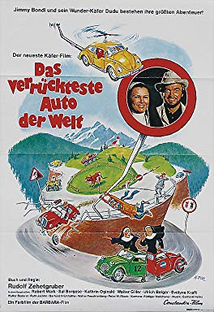
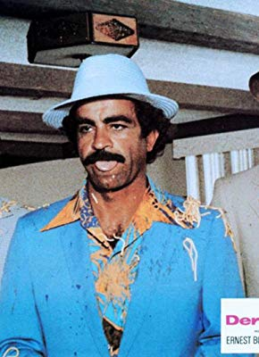

#10236 Dudu 4 - Das verrückteste Auto der Welt
 
 IMDB-Wertung: 5.0 / 10
IMDB-Wertung: 5.0 / 10  Metascore: 0
Metascore: 0 
Jahr: 1975
Dauer: 88 Minuten
FSK: 6
Land: West-Deutschland Studio: Constantin FilmTonspuren:
Untertitel:
Auflösung: 1080p (1920x1080) Größe: 5089 MB
Genre: Komödie
Regisseur: Rudolf Zehetgruber
Drehbuch: Rudolf Zehetgruber
Soundtrack: Gerhard Heinz
Darsteller:
-  Sal Borgese als Aldo Regozzani
 Walter Giller als Jean-Pierre
Walter Giller als Jean-Pierre- Evelyne Kraft als Schwester Engelmunda
- Otto Retzer als Rennfahrer im Rover (uncredited)
- Rudolf Zehetgruber als Jimmy Bondi
- Kathrin Oginski als Schwester Johanna
- Walter Roderer als Jakob Robusti
- Ruth Jecklin als Fräulein Bingermeier - Robustis Assistentin
- Ulrich Beiger als Marchese de la Pozzi
- Peter W. Staub als Hotelbesitzer Häckli
- Gerd Frickhöffer als Mr. Brown II
- Walter Feuchtenberg als Mr. Brown I
- Marion Winter als Isabell
- Walter Saturni als Gollombin
- Gary Parello als Parello
- Vincenzo Biagi als Kommandant der Wache
- Oskar Klose als Chefreporter
- Werner Abrolat als Preisüberreicher (uncredited)
- Norbert Gastell als Mr. Brown II (uncredited)
- Fred Maire als Jimmy Bondi (uncredited)
- Bruno W. Pantel als Hotelbesitzer Häckli (uncredited)
Datei: X:\5-Pentalogie(A-Z)\Dudu - Ein Käfer\Dudu 4 - Das verrückteste Auto der Welt (1975, FSK6, 1920x1080).mkv seit 25.12.2018
Festplatte: HD Collection-3(N-Z)-6(A-Z)
 Es gibt insgesamt 8 Filme in der Gruppe '5-Pentalogie(A-Z)\Dudu - Ein Käfer'
Es gibt insgesamt 8 Filme in der Gruppe '5-Pentalogie(A-Z)\Dudu - Ein Käfer'